I led a continuous series of experiments across Prose's consultation — guiding users from entry, through email capture, and into the cart. Dozens of bets, one compounding outcome over 9+ months.
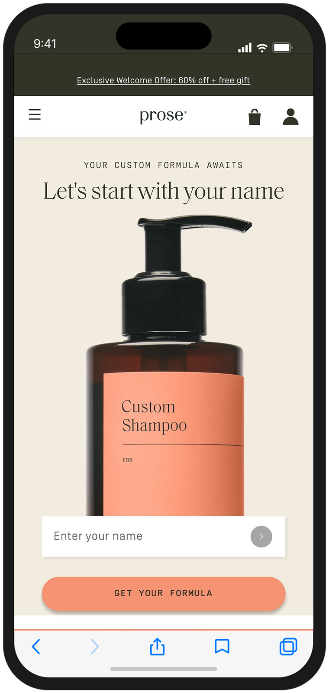
Prose's consultation is the core of the business. Every answer feeds an algorithm that creates the customer's unique formulation. It wasn't broken, but the funnel showed clear drop-offs at entry, email capture, and mid-funnel completion. A new acquisition channel (AppLovin) was also bringing in lower-intent traffic, so the experience needed to work harder across audience types.
The questions themselves were off limits since they feed the algorithm. And because this is Prose's primary conversion driver, every experiment had to be scoped carefully with clear rollback plans. The question wasn't "how do we fix it." It was "how do we make it do more, without losing what makes it work."
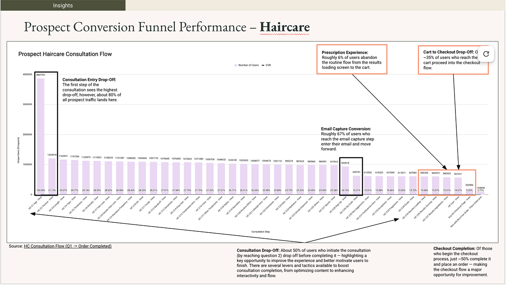
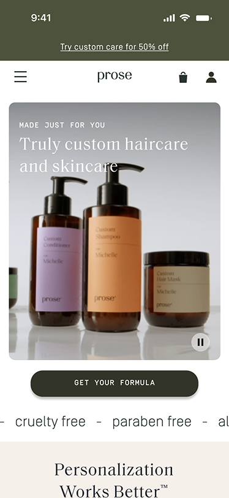
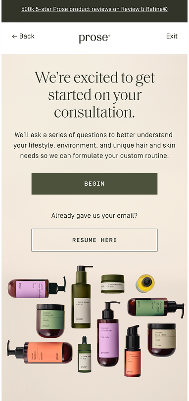
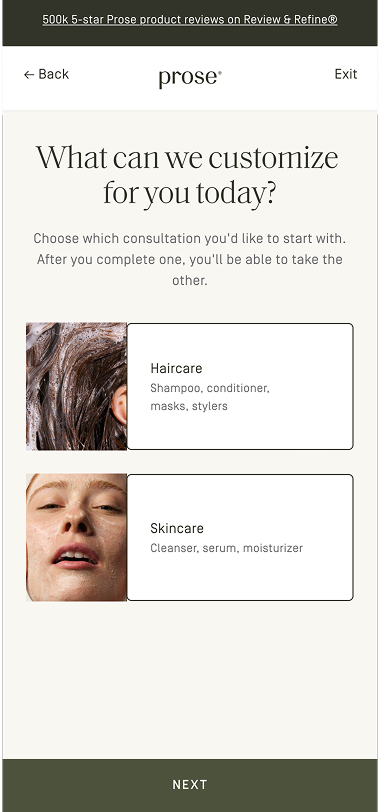
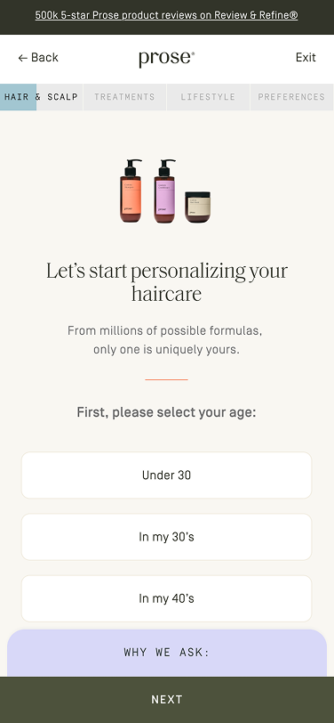
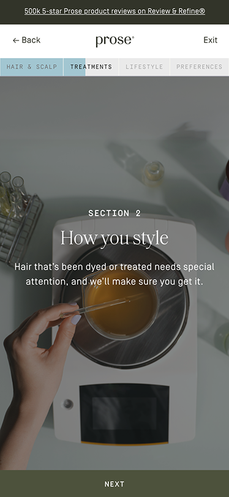
What we tested and when shifted depending on the moment. Sometimes we went after the biggest drop-off points. Other times business urgency dictated the priority, like when AppLovin traffic changed the funnel dynamics overnight. Cross-functional visibility came through a weekly stakeholder meeting I introduced when I joined Prose, which kept leadership and partner teams aligned on progress and results, and gave us a regular forum to capture feedback and decide what to pursue next.
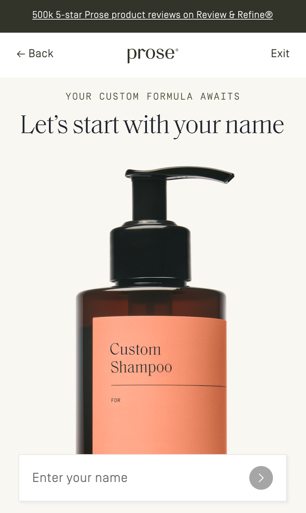
“It's simple and cute!”- Prospect user
The homepage had a "get your formula" link but nothing that hinted at what the consultation experience would be. I pushed to add an interactive entry point and directed the team through testing four concepts. A zip code concept tested as the most unique but was harder to execute at scale. A concerns concept came across as too standard. The name concept won on simplicity, giving users a taste of personalization before they'd even entered the funnel.
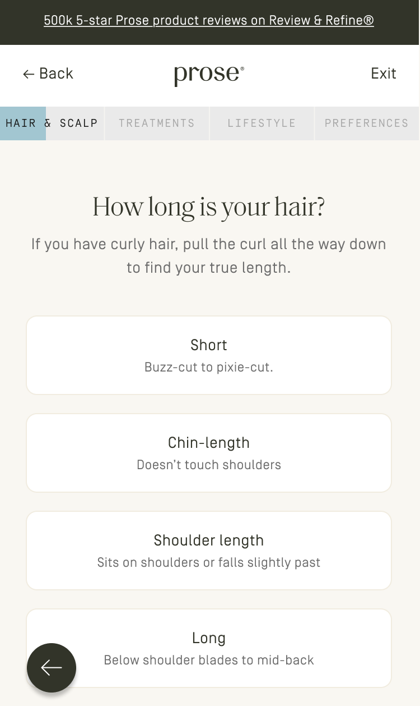
The original first question was age — a reasonable data point, but not something that inspires you to keep going, especially for customers landing directly from ads. I pushed to test it. Hair length won: visual, tangible, immediately relevant.
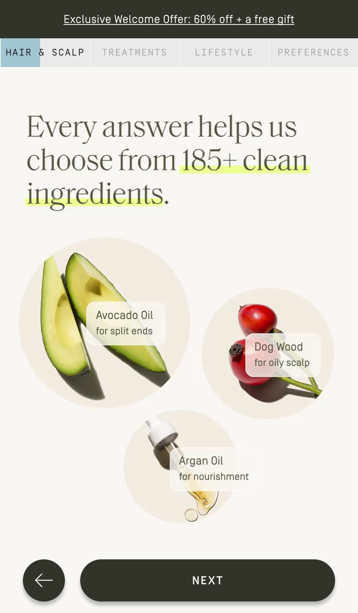
The consultation's primary CTA sat too close to the browser UI and users were missing it. I used that as an opening to push for broader simplification — floating CTA, no header nav, embedded tips.
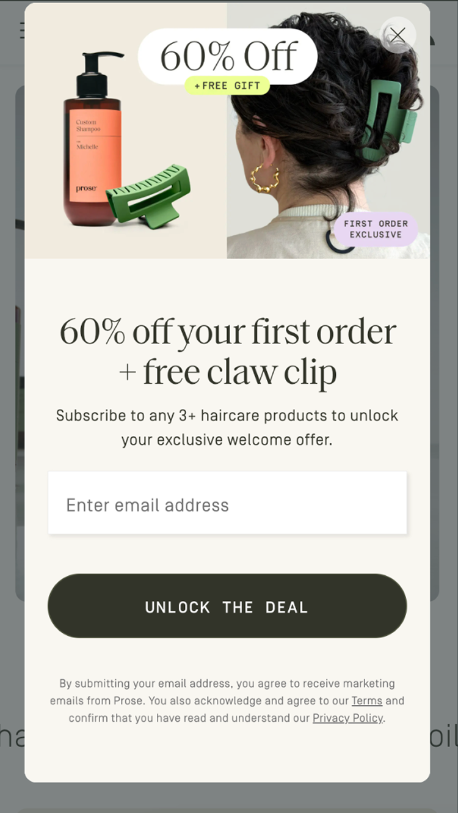
Adding an email capture field to the homepage pop-up gave us another touchpoint to capture emails before users even entered the consultation.
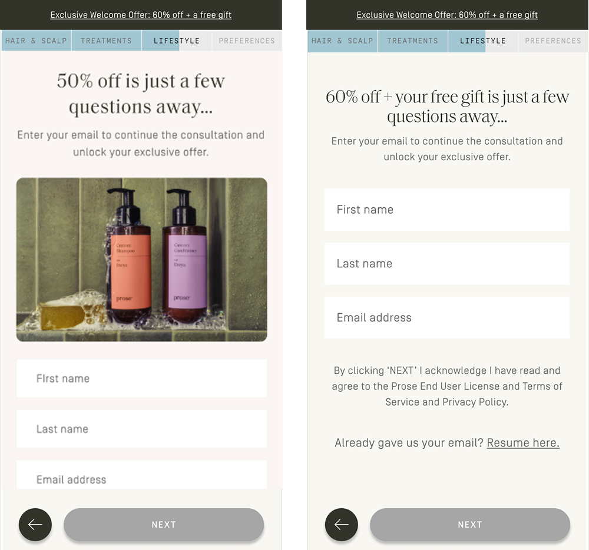
A visual promo at the email capture step appeared to lift conversions by +4%. However, when we excluded returning "Resume Here" users, the rate actually dropped -7%. The promo was hiding the Resume Here button and pushing form fields below the fold on mobile. It was clear we needed to focus more on placement than messaging.
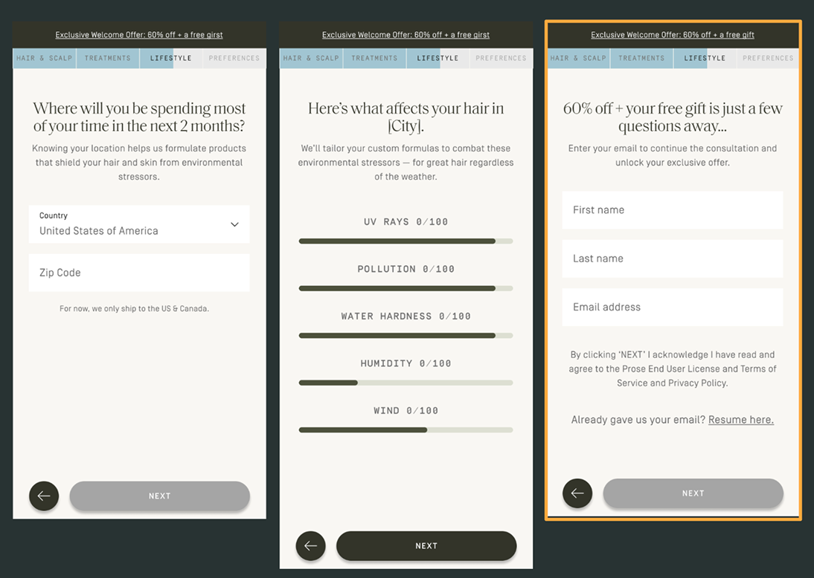
We tested the email capture in several locations within consultation. The winner: after the geo aggressor questions, where users see how their local environment affects their hair. By that point the ask feels natural and customers are invested.
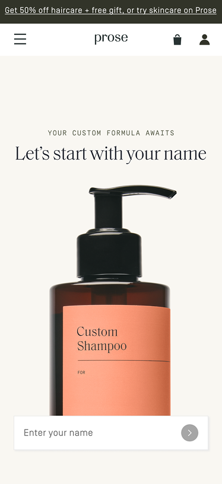
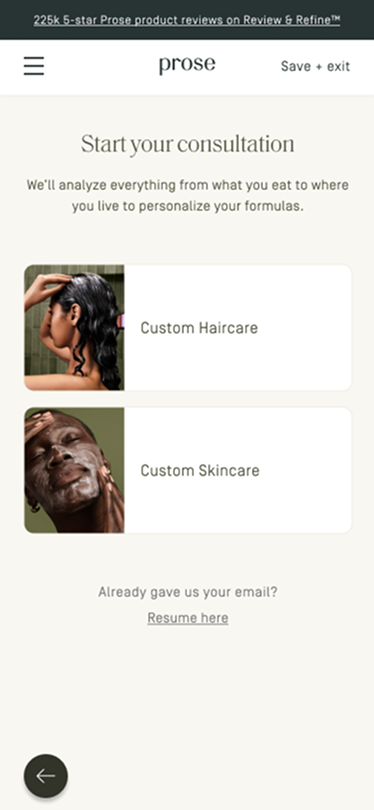
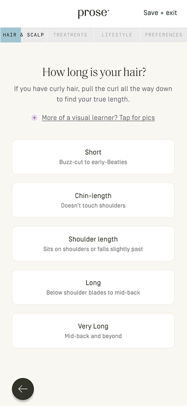
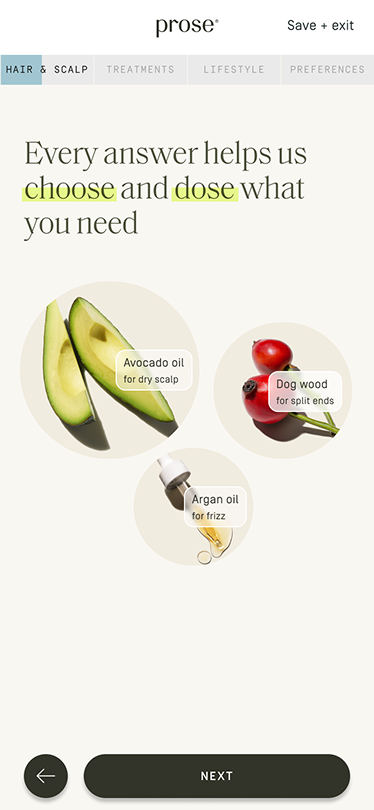
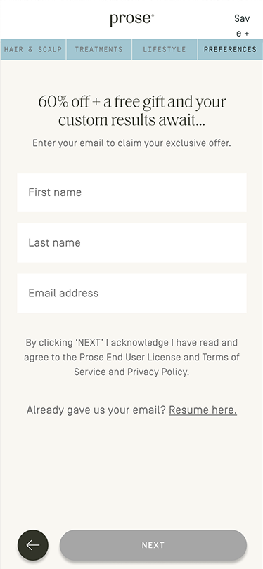
The individual experiments each moved the needle, but the more meaningful measure is what they added up to: +34% YoY prospect session conversion. That number reflects 18+ months of compounding gains across every stage of the funnel — from how users first encountered the consultation, to how they moved through it, to whether they shared their email and came back.
The work wasn't about one big redesign — it was sustained experimentation, adapting to shifting priorities and incoming data. I directed every experiment, stayed close enough to review each design iteration, and pivoted the team when something didn't land. When a promo image hurt returning users, we caught it fast and iterated. When the first question swap outperformed expectations, we doubled down on that insight across the flow.